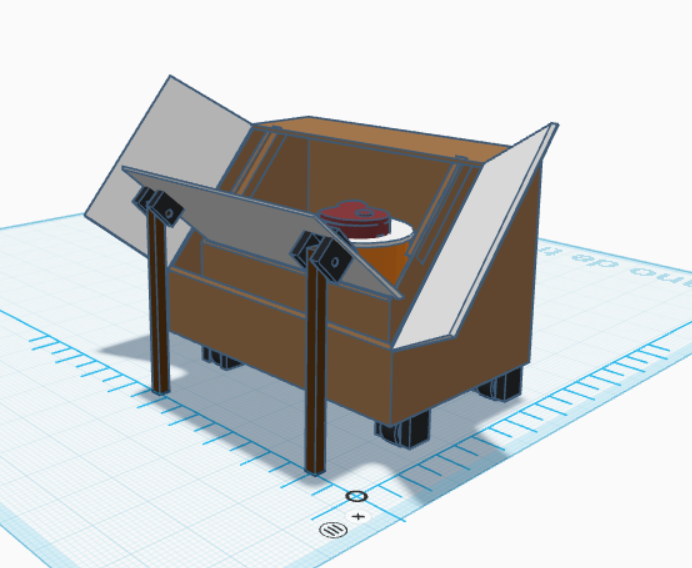
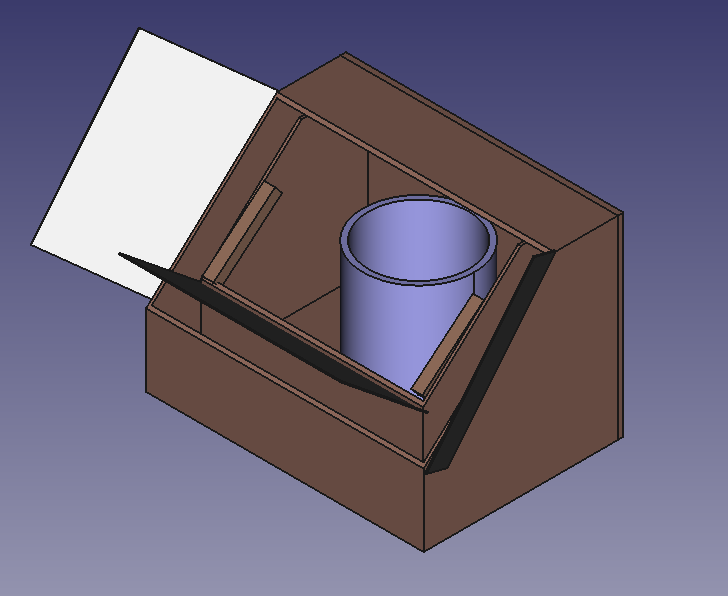
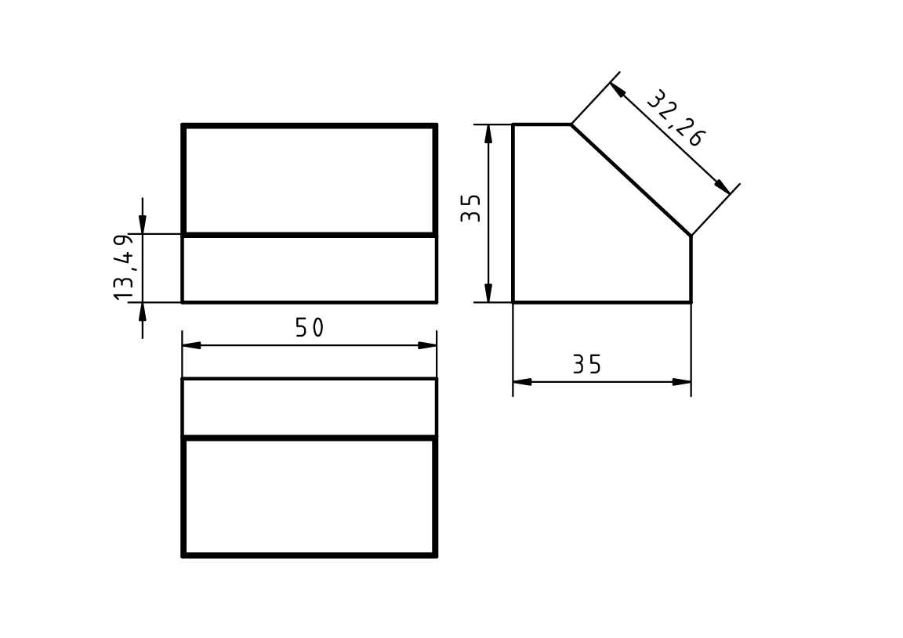
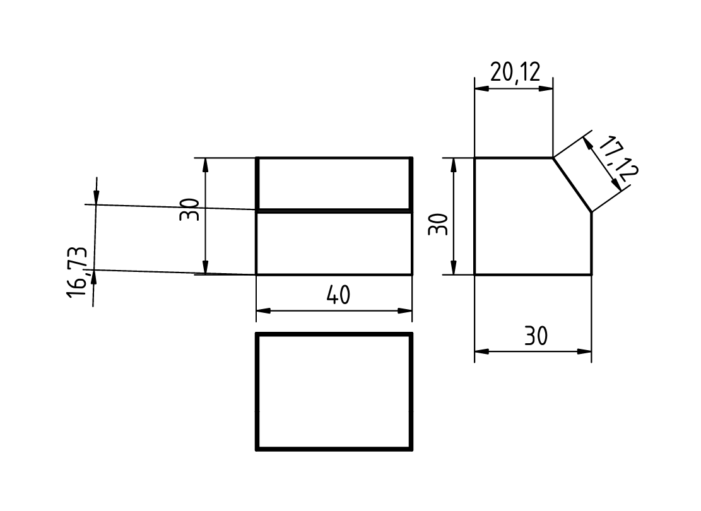
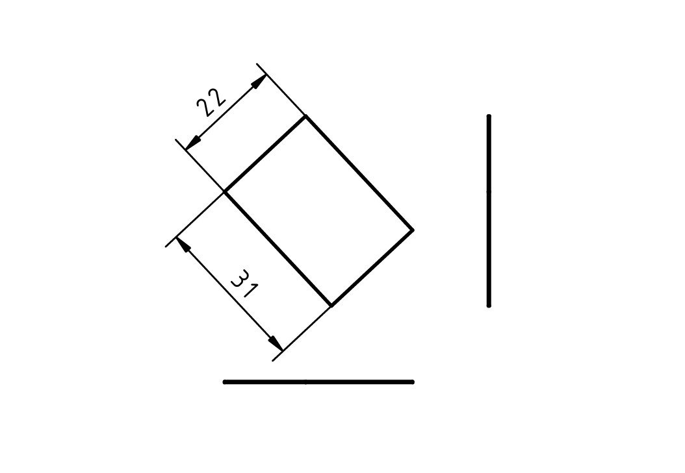
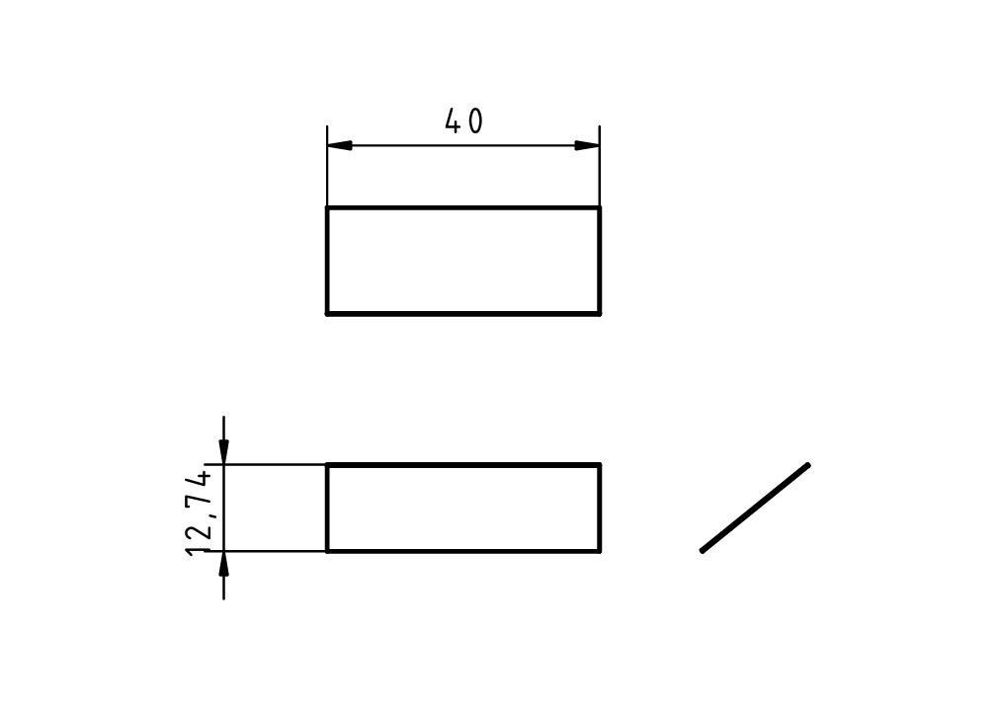
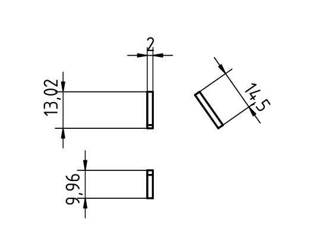

Lo siguiente fue pasar nuestro diseño a 3D, y posteriormente a planos. Esta ha sido la tarea más duradera. Al principio usé para hacer el diseño 3D tinkerCAD, y Eduardo usó FreeCAD (cada uno con la plataforma que preferían). A la hora de hacer los planos no pude hacerlos en tinkerCAD, por eso para ello hemos usado la plataforma "FreeCAD". Eduardo no estuvo haciendo el diseño que hicimos, y Lola no sabía usar la plataforma y no le salía, por eso yo hice todo el diseño 3D. A Lola le tocó hacer los planos pero los hizó mal, asique los terminamos los tres. Aunque hacer los planos era fácil, tardamos mucho en terminar esta tarea. Creo que hubiera sido mejor hacerla individualmente.
      